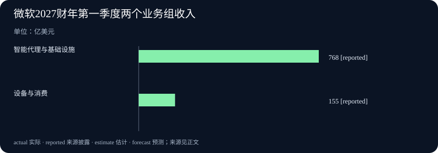

Daily Intelligence · 2026-10-29
研究截止：2026 年 10 月 29 日 07:01:48（Asia/Shanghai）。观察窗口自 10 月 28 日 07:01:48 起。下列四条主线的官方页面均标注 10 月 28 日，但未披露具体发布小时及其时区，因此不能断言每条均已证实落在严格 24 小时内。
Today's Thesis
AI 正把录音、合同等原始材料整理成可交接的工作；判断价值时，要继续看复核成本、真实收入和使用条件。微软云业务增长与加拿大加息同时提醒我们：工具更好用，并不意味着企业面对的所有成本都在下降。
Executive Summary
英伟达发布可按指令选择转写方式的语音模型，Anthropic 则为法律团队提供可改编的交互工具。两者的新意都在于让材料更容易进入下一步工作，但准确性仍要由实际任务检验。微软披露截至 9 月底的季度收入增长，给出了已经发生的经营结果；加拿大央行提高政策利率，则回应能源成本进一步推高其他价格的风险。
本期相较前两期的新增事实很明确：10 月 27 日报道的图像理解、企业软件接入计划，以及 28 日的小模型和虚拟世界研究，均不再充当今天的新消息。今天关注的是语音输出的可选择性、法律工作成果的来源回链、微软新的季度披露和加拿大的新利率决定。这些事件没有被证明互为因果，不能用某个新工具的发布解释已经结束的财季。
AI Daily
1. 英伟达让同一段录音按用途输出文字
英伟达 10 月 28 日介绍 Nemotron 3.5 Transcribe。这个模型把录好的语音变成文字，支持 40 种语言和最长一小时的录音。用户可用普通语言要求逐字记录、整理成书面表达，或附上说话者和逐词时间标记；选择输出方式无需重新训练模型。英伟达研究原文
这解决的是一个容易被忽略的问题：同一段话，可以有不同的合格记录。保留停顿和重复适合核对原话，整理后的文字适合阅读。编辑判断是，能够先说明用途，有助于减少拿到文字后再做一轮格式处理的工作。但整理后的句子也可能掩盖说话者原有的迟疑，因此不能把两种版本混用。
原文还介绍了模型权重和调整工具的发布。权重是模型计算所用的一组数值，开发者取得它们后可以研究部署方式。拥有权重不等于任何设备都能顺畅运行。原文中的测试表现属于厂商披露，本期不把排行榜成绩改写成所有语言、口音和行业都已达到相同准确率。实际采用前仍应抽取自己的录音，检查人名、数字和多人重叠说话的位置。
2. Claude 的法律工具把结果连回材料
Anthropic 同日推出法律工作用的 artifacts，即可交互、可分享的小工具。法律团队可以从模板开始，接入自己的文档和资料。工具包括引文核对、合同条款表和事项看板；官方说明，每个答案或输出都带有来源链接，由 Claude 先处理，再由律师判断结果。Claude 官方公告
这次增量在于把日常任务做成团队能够继续使用的界面。例如，合同中与公司标准条款不同的内容，可以列出来交给负责例外审批的人。这里的“例如”说明工作方式，并不是本期独立核验过的客户成效。一个清楚的交接表，可能比一段流畅的长答案更便于复核，也更容易发现谁还需要作出决定。
来源链接提供了检查入口，并不自动证明结论正确。复核者仍要看链接是否指向相关条款、是否遗漏适用条件、资料是否仍有效。该公告归在 Claude Enterprise 产品下，未给出所有套餐和地区的完整资格说明，本期不将其描述为所有用户均可免费使用。公告中的法律连接器累计数量也不是当天一次新增的数量。
Business Daily
1. 微软披露新财季，云业务收入继续增长
微软 10 月 28 日发布 2027 财年第一季度业绩，统计期截至 2026 年 9 月 30 日。财年名称与自然年不同，这份报告说的是已经结束的 2026 年 7—9 月。季度总收入约 923 亿美元，同比增长 19%；微软云业务收入约 639 亿美元，同比增长 30%。微软官方季报
按公司新的业务分组，“智能代理与基础设施”收入约 768 亿美元，同比增长 25%；“设备与消费”约 155 亿美元，同比下降 3%。智能代理通常指能按指令执行多步工作的软件，这里首先是公司的业务分类名称，不能把该组全部收入都算成新兴 AI 产品收入。云业务也是另外一个统计口径，不能再与上述两组相加。
这份季报的阅读价值在于分清增长来自哪里。总收入增加，并不代表所有业务同步改善。对于评估软件供应商的读者，值得继续看客户愿意为哪些功能付款、付款是否持续，以及服务这些客户需要多少投入。本期没有足够证据把收入增长分配到某个模型或某项刚发布的功能上。
2. 加拿大央行加息，担心能源涨价向外传递
加拿大央行 10 月 28 日宣布把隔夜政策利率目标提高 0.25 个百分点，至 2.50%。这是银行之间短期资金价格的政策目标，会影响更广泛的融资条件；它不代表每笔家庭或企业贷款都立即按相同幅度变化。加拿大央行决定
央行担忧，能源价格上升会进一步传到其他商品和服务价格。它把 2027 年消费者价格涨幅的平均预测调至 3%，比 7 月预测高一个百分点，并预计到 2028 年中接近 2%。这些数字是预测，不是已经实现的通胀结果。央行表示后续可能还需加息，同时强调会谨慎行事，不能据此写成确定的连续加息安排。
Macro Observation
加拿大的决定说明，企业采用更有效率的工具与整体经济融资环境，可以朝不同方向变化。即使某个团队减少了整理资料所需的时间，能源、运输或借款成本上升仍可能抵消一部分好处。这是对经营机制的分析，不是对某家公司未来利润的预测。
还要分清成本上涨和企业已经涨价。加拿大央行说，企业迄今大体在自行吸收较高的投入成本，而调查显示，未来把成本转到售价中的可能性增加。前者描述已经观察到的状况，后者描述风险。读者若关心某一行业，应继续追踪实际价格和利润，而不能直接把央行的风险判断当成该行业已经全面涨价。
今天的微软季报和加拿大利率决定也属于不同地区、不同时间尺度的证据。季度收入回答过去三个月卖出了多少服务；利率决定应对未来价格风险。把两者放在一起，适合提醒我们同时检查收入和成本，不适合据此判断全球所有科技公司的下一季表现。
Signal Dashboard
| 信号 | 已发生或已披露的变化 | 下一步要看什么 |
|---|---|---|
| 语音整理 | 同一模型可按指令选择记录方式 | 自有录音中的人名、数字和说话者能否正确保留 |
| 法律协作 | 新模板让输出带来源入口并交给律师判断 | 复核时间、遗漏条件和权限管理是否改善 |
| 微软经营 | 季度收入约 923 亿美元，两个业务组表现不同 | 后续收入增长能否伴随可持续投入 |
| 加拿大货币政策 | 政策利率目标上调至 2.50% | 能源影响是否实际扩大到其他价格 |
这里的产品变化、公司收入和政策决定各有证据边界。表格只帮助对照问题，不把它们合成一个未经定义的景气分数。
Deep Insight
真正值得比较的是下一位接手者要花多少力气
一项工作常常不是在答案出现时结束，而是在另一个人愿意依据它继续行动时才向前走。录音要交给编辑或同事，合同要交给律师和审批者，经营报告要交给预算负责人。对这些人来说，文字是否流畅只是一部分问题。他们还需要知道材料从哪里来、哪些地方经过整理、还有哪些条件没有被检查。
今天两个 AI 更新提供了观察这个问题的不同角度。语音转写允许先指定记录形式，法律工具为结论提供来源入口。编辑的推断是，它们都在尝试减少工作交接中的解释负担。不过，交接负担减少多少，还不能从产品介绍中直接读出来。能够生成一个看板，和同事确实更快完成审批，是两种不同的证据。
假设一个团队每天都要整理客户会议。若它只比较生成文字用了多少秒，可能漏掉随后核对金额、姓名和承诺内容的时间。假设另一个团队用表格检查合同，若表格遗漏一项关键例外，表面上节省的时间也可能转成后续返工。这些是假设，用来说明评价方法，不是在报告任何企业已经发生的事故。
因此，试用时可以先保留一个很小、可重复比较的任务。让原来的做法和新工具处理同一批材料，记录从原始输入到负责人确认的总时间。把普通修改与会改变决定的错误分开记录，观察是否有人因为难以找到依据而需要重新阅读全部资料。这样的比较不必一开始就建立复杂评分体系，却必须把人工复核包括进去。
还要给“整理”设定稳定含义。逐字记录保留原话，书面表达可以调整口头重复；两者都可能有用，但接手者应该知道拿到的是哪一种。法律输出同样需要明确，它是对现有条款的摘录，还是对适用规则的分析。如果把摘录当成判断，或者把模型建议当成已经批准的事项，界面越整齐，误解反而可能越难被发现。
微软的季报则提供另一层提醒：能力需要通过客户使用和付款，才逐步变成经营结果。今天披露的季度数据已经发生，今天发布的新工具尚需接受后续检验。它们处于价值形成过程的不同阶段。不能从云收入增长直接推导出任意一项新功能都值得采购，也不能因为一款产品尚无独立成效数据就认定它毫无用途。
融资环境会改变企业愿意怎样试验。加拿大的政策决定并不直接决定所有软件预算，却说明资金成本和价格风险仍需进入经营判断。对一个具体团队，合理的问题是：这项工具能减少哪一段重复劳动，需要多少设置和复核，使用条件是否适合自己的资料。先把这些问题回答清楚，再谈扩大使用，才更有机会把便利变成持续收益。
Tomorrow Watch
接下来观察三件事。第一，语音模型在真实口音、专有名词和多人交谈中的表现，是否有独立、可重复的测试。第二，法律工具的使用条件和权限说明是否足够清楚，团队是否能够报告从输入到人工确认的完整效果。第三，后续企业披露能否帮助区分云服务增长、其他业务变化与投入成本。
宏观方面，继续跟踪加拿大实际价格数据与企业定价行为，检验能源成本外溢的风险。央行预测有明确时间跨度，不能用明天的一条价格消息就宣布预测成立或失效。本栏列的是观察问题，不预告这些事项一定会在明天公布。
One Chart
微软两个业务组的季度收入

图表采用微软披露的 2027 财年第一季度口径，即截至 2026 年 9 月 30 日的季度。“智能代理与基础设施”约 768 亿美元，“设备与消费”约 155 亿美元，均为已披露收入，按公司新闻稿四舍五入。图中的 reported 表示“来源披露的数字”，不是目标或计划。
两项相加约为总收入 923 亿美元。它们反映业务规模，不代表利润或单一 AI 产品销售额。另行披露的云业务收入 639 亿美元与业务分组有重叠，不能作为第三项再相加。图表来源：微软季报
Quote of the Day
The value of philosophy is, in fact, to be sought largely in its very uncertainty.
中文：事实上，哲学的价值，很大程度上要从它自身的不确定性中寻找。
人物：Bertrand Russell（伯特兰·罗素）
出处：《哲学问题》（The Problems of Philosophy，1912），第十五章“哲学的价值”。原著全文与对应章节
上下文：罗素讨论哲学如何使人重新检查习惯性的确信，看到此前未曾考虑的可能性。他没有因此宣称所有知识都不可信。
编辑解读：承认哪些事情尚不知道，可以成为继续提问的起点。这是本期的阅读联系，不是说罗素当时在讨论 AI 或今天的经济事件。
Action Items
- 记录要交给谁？ 处理录音前先说明接手者需要原话还是整理稿，核对数字、人名和说话者，保留回听入口。
- 结论能否找到依据？ 试用文档工具时抽查来源链接，确认它确实支持相应判断，并记录仍需人工处理的例外。
- 总共节省多少时间？ 用同一批材料比较原做法和新工具，把设置、复核和返工一起计入，避免只看生成速度。
- 收入是哪一种口径？ 阅读微软季报时先标明季度和业务分组，不把云收入重复相加，也不把整组收入算成 AI 收入。
- 哪些还只是预测？ 将加拿大已宣布的利率变化与未来通胀预测分开记录，用后续实际数据检验风险是否出现。
信息边界
新闻研究截止时间固定为 2026-10-29T07:01:48+08:00，窗口起点为 2026-10-28T07:01:48+08:00。四条主线均依据标注 10 月 28 日的一手原文；原文发布小时与时区未披露，不能确认严格小时窗口。公司结果是其自行披露，产品效果与央行预测保留各自条件。经典引文不受新闻窗口限制。